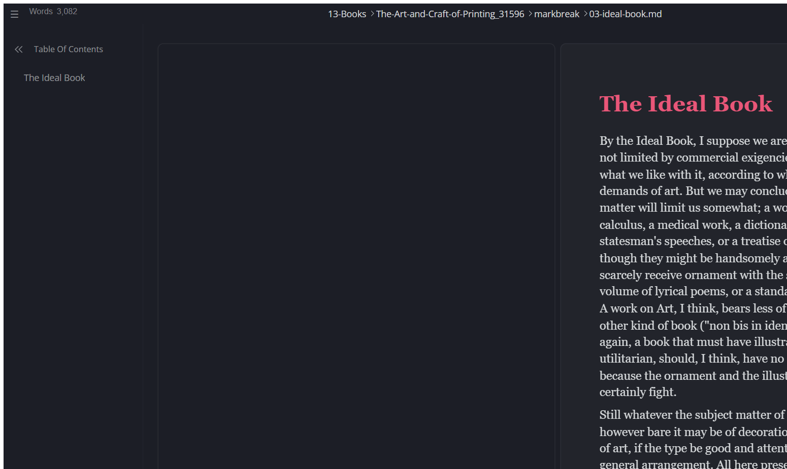

MarkBreak
Plain-text manuscripts for printed matter. Roles in YAML. Hard breaks in the source. Spreads you can see in the Desktop window.

WYSIWYG on disk. Source when you need the marks naked. role: in the front matter. No account. Files any machine can open.
Not a fake book preview. Folio Pages and facing Spreads ship in Desktop — check the turn before Docx.
One role per leaf. //break advances; //break page forces a turn. Tables that calculate — Markdown or CSV. Spec: markbreak.com.
One sentence bright. The rest fades. Typewriter when you want the page to follow the caret.
Windows, macOS, Linux. Open a blank page. Write the first line. Keep the path clear to print.